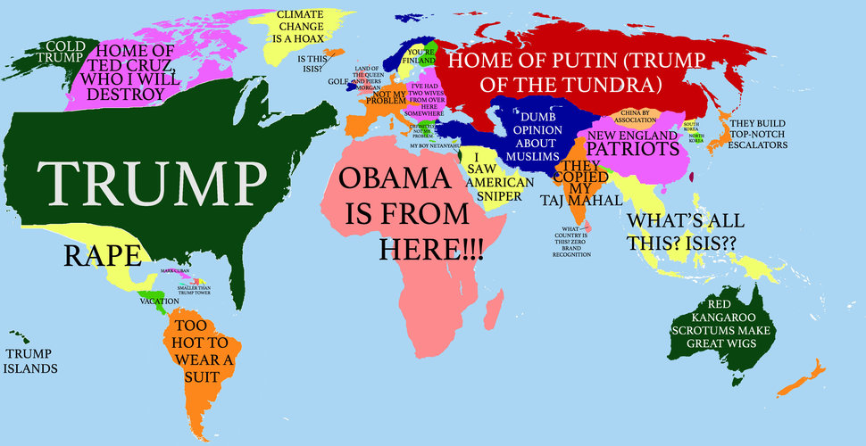

Andrew Tichenor
External Links
FusionAuth
CleanSpeak
LinkedIn
About
(current)
Portfolio
Contact
A Whole Different World View

Andrew is an international business professional with years of experience successfully leading sales teams for start-ups in Shanghai, Beijing, and Seattle as well as working in a technical, project management capacity for publically traded companies such as Hewlett Packard, Hitachi Consulting, Gurit Tooling, and Expeditors International of Washington. This ability to thrive in a start-up and corporate environment stems from an unquenchable desire to learn new skills coupled with a passion for having a positive impact on people. His background demonstrates these desires by graduating in the top ten percent of his class at Seattle University, studying finance in Chicago, studying economics in Shanghai, studying operations in Amsterdam, and pursuing finance through private equity work in London and Merrill Lynch in Seattle. Andrew’s broad base of international work and educational experiences have resulted in the following qualifications that will act as a true value-add in his future endeavors. Key Qualifications: ▪ Partnered with two European founders to grow a business, focused on international internships, from zero to $1.2 million in sales in three years ▪ Developed partnerships with over 100 companies in Shanghai, Beijing, and Hong Kong through management of internship programs totaling over 500 students ▪ Negotiated contracts, developed business with B2B and B2C on a transactional and full sales-cycle basis, and implemented global sales, operations, and marketing strategy ▪ Prepared weekly status reports, documented workflows, and managed field personnel ▪ Managed projects under tight deadlines, ensured project success, defined sales performance indicators, and analyzed performance to meet financial projections ▪ Proficient in Excel, PowerPoint, MS Project, Access, ERP Systems, and Salesforce CRM